La Cigale
Le navigateur libre, sobre et respectueux, conçu en France.
Notre démarche
La Cigale reprend Firefox ESR, la version à support étendu de Mozilla, et la règle pour l'anonymat et la sécurité : empreinte uniformisée façon Tor Browser, aucune télémétrie, DNS chiffré, HTTPS imposé, tout effacé à la fermeture. Interface en français.
La Cigale réduit fortement le pistage, mais ne masque pas votre adresse IP. Pour cela, utilisez un VPN de confiance ou Tor Browser.
Réglages avancés
Chaque réglage reste modifiable dans about:config. La liste complète des choix
par défaut se trouve dans le fichier cigale.cfg livré avec le navigateur.
Pour retrouver le nouvel onglet natif de Firefox, passez cigale.nouvelOnglet.natif à true.
Licences
La Cigale est distribuée sous licence publique Mozilla 2.0 (MPL-2.0). Firefox et ses logos sont des marques déposées de la Mozilla Foundation. La Cigale n'est ni affiliée à Mozilla ni approuvée par elle.
Logo : « Cicada » par Alex Muravev, The Noun Project, licence CC BY 3.0.